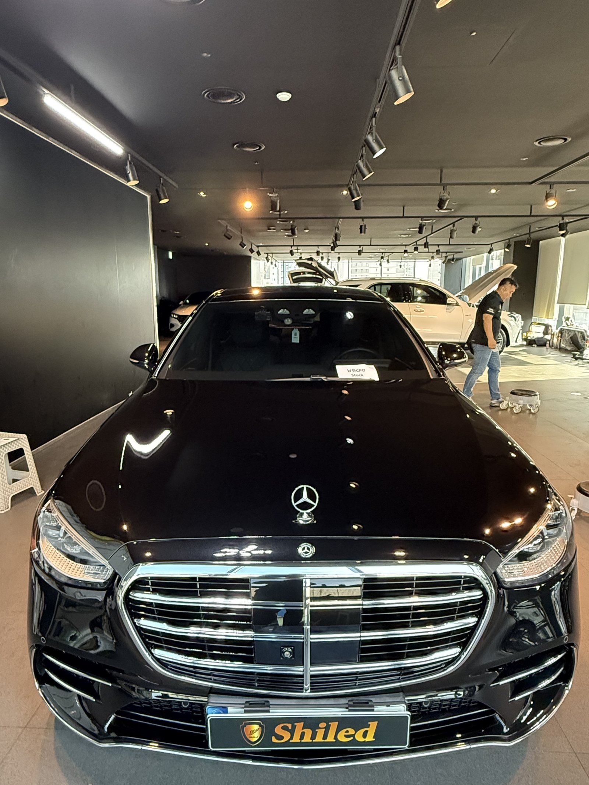
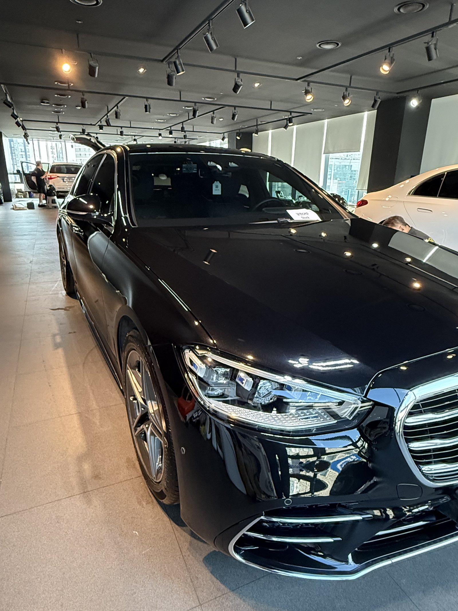
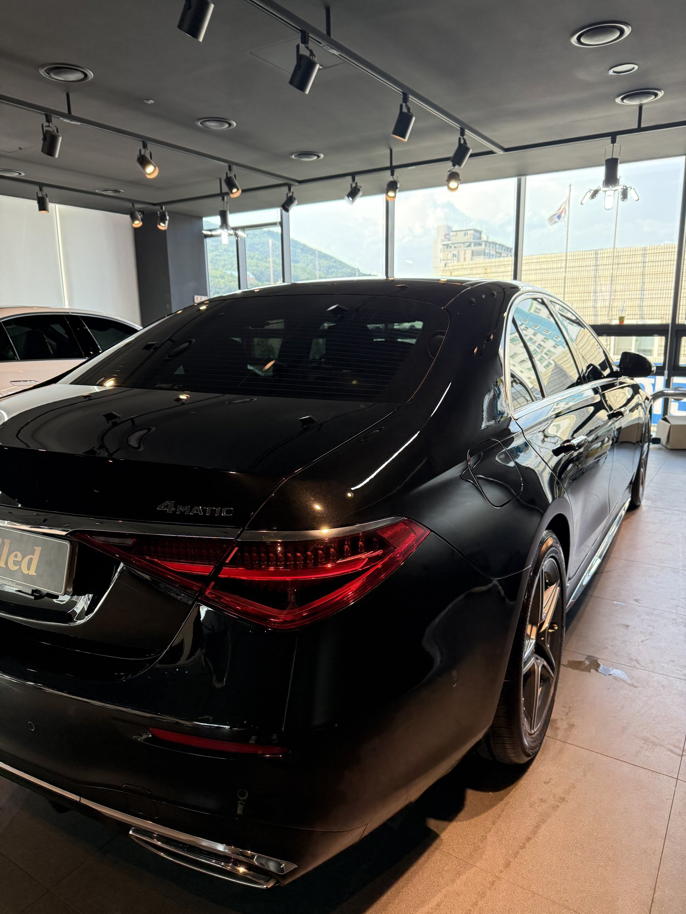
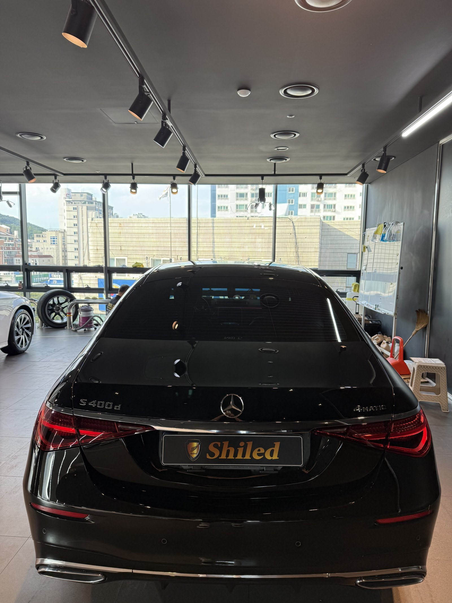
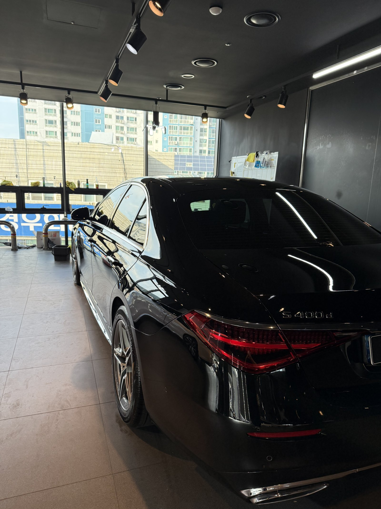
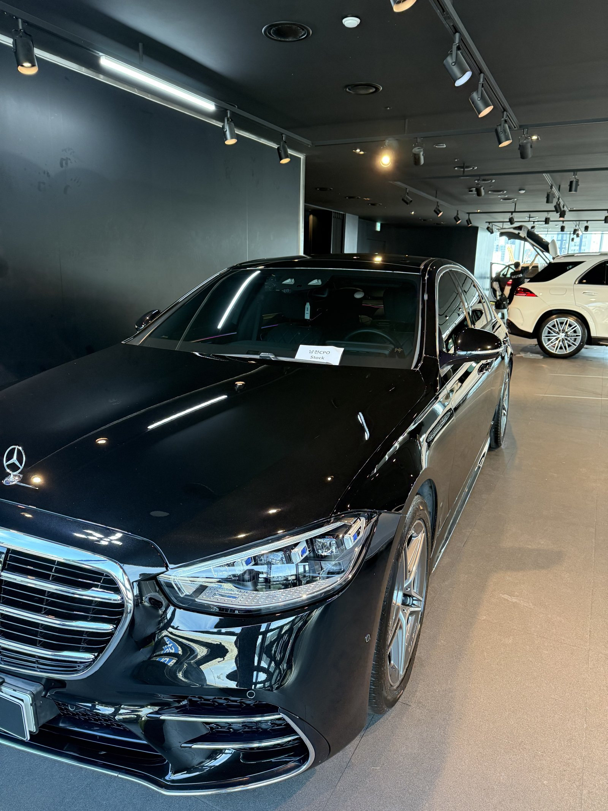
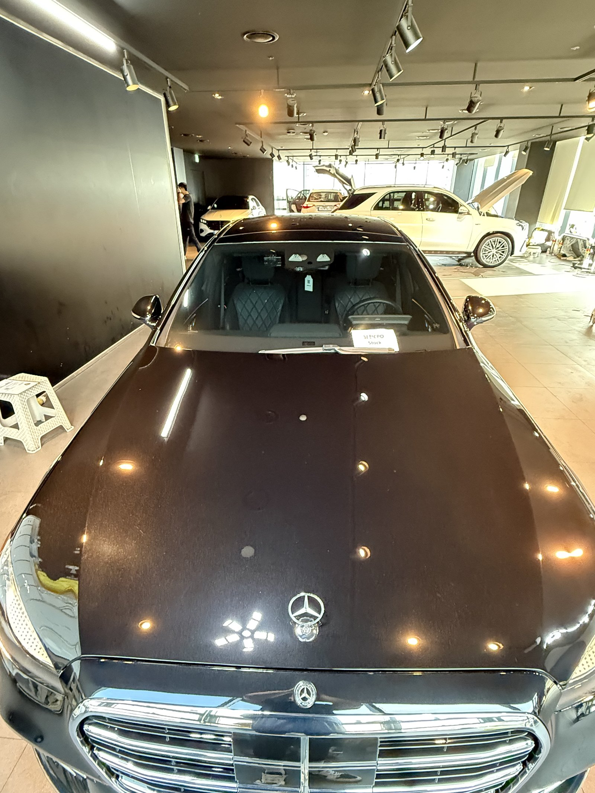
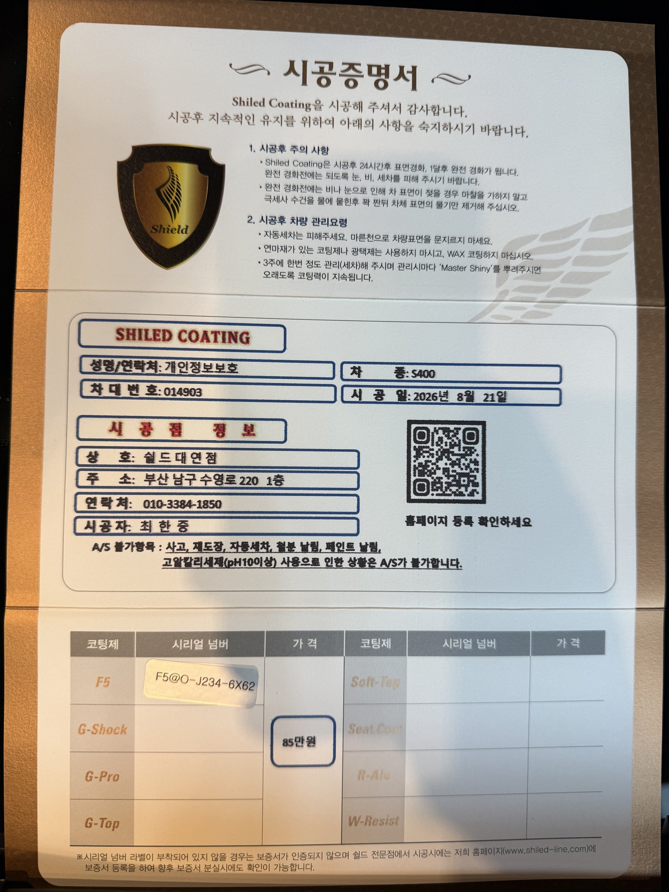

벤츠 S400 검정입니다. 아직 출고 전, 새 차입니다.
부산 유리막코팅으로 이 차는 출고 전에 F5를 올렸습니다.

플래그십 세단, 긴 패널이 관건이다
S클래스는 도어 패널 하나의 면적이 웬만한 준중형차 옆면보다 넓습니다.
패널이 길고 넓을수록 코팅제 도포량이 앞뒤로 조금만 달라져도 마르는 속도 차이로 얼룩이 남기 쉽습니다. 부산 유리막코팅에서는 이런 대형 세단일수록 패널을 구간별로 나눠 같은 속도로 밀어야 전체가 고르게 마감됩니다.

검정 신차에 왜 F5인가
F5는 색감 깊이를 끌어올려 글로시함을 극대화하는 코팅입니다.
검정은 발색이 얼마나 깊어 보이느냐가 관건입니다. 여기에 F5를 올리면 젖은 듯한 윤기가 생겨, 같은 검정이라도 더 진하고 도톰하게 보입니다. 코팅제는 대표가 화학공학 전공으로 직접 개발·제조한 제품입니다.


기술자의 팁
신차라고 바로 코팅을 올리지 않습니다. 운송·보관 중 묻은 미세 오염을 디테일링 세차와 탈지로 걷어낸 뒤에 올립니다. 깨끗한 바탕 위에 올려야 코팅이 제대로 밀착합니다.



외부만이 아니라 안까지
출고 전 차량은 안팎 컨디션을 함께 정리합니다.
실내는 아직 시트에 보호 커버가 씌워진 신차 그대로입니다. 외부 도장은 F5로 발색을 잡고, 인도까지 깨끗한 상태로 관리합니다.


시공증명서를 함께 드립니다
모든 시공 차량에 시공증명서를 드립니다.
차종·시공일·코팅제 시리얼 번호가 적혀 있고, 홈페이지에 등록해 보증을 받으실 수 있습니다. 이 차는 F5 코팅으로 기록돼 있습니다.

차종·시공일·코팅제 시리얼이 기재된 시공증명서
자주 묻는 질문
Q. S클래스처럼 큰 세단은 시공이 더 어렵나요?
A. 도어 패널 하나의 면적이 준중형차 옆면보다 넓어, 도포량이 앞뒤로 조금만 달라져도 마르는 속도 차이로 얼룩이 남기 쉽습니다. 패널을 구간별로 나눠 같은 속도로 밀어야 고르게 마감됩니다.
Q. 검정 S클래스에는 어떤 코팅이 좋나요?
A. 이 차는 F5로 진행했습니다. F5는 색감 깊이를 끌어올려 글로시함을 극대화합니다. 검정에 젖은 듯한 윤기를 더해, 같은 검정이라도 더 진하고 도톰하게 보입니다.
Q. 새 차인데 왜 출고 전에 코팅을 하나요?
A. 도장면이 가장 깨끗할 때 올리는 코팅이 가장 오래갑니다. 출고 후 운행·세차로 미세 잔기스와 오염이 쌓이기 전, 신차 상태 그대로일 때 코팅막을 입혀두는 것이 부산 유리막코팅의 기본 원칙입니다.
Q. 쉴드광택 위치와 예약은 어떻게 하나요?
A. 부산 남구 유엔로220 1F 쉴드광택입니다. 예약·상담은 010-3384-1850, 대표 최한중이 직접 상담하고 책임 시공합니다.
새 차일수록 시작점이 다릅니다. 가장 깨끗할 때 입혀두십시오.
제품을 직접 만드는 사람이 직접 시공합니다.
부산에서 유리막코팅을 고민 중이시면 편하게 연락 주십시오.
어떤 차를 타냐보다 어떻게 타냐가 중요합니다~!
시공 중에는 전화를 받지 못할 때가 많습니다.
카카오톡으로 차종과 원하시는 시공을 남겨주시면 확인 후 답변드립니다.
쉴드광택 · 부산 남구 유엔로220 1F · 대표 최한중